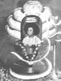

Bhagawan Sri Sathya Sai Baba - Life History
The Ratnakaram Raju Family
 The Raju family of Puttaparthi was noted for its piety since the days of the renowned sage, Venkavadhootha, a saintly ancestor who was looked upon as a Guru in hundreds of villages around. Not only did the family build and endow the Gopalaswami Temple (dedicated to Lord Krishna), but Sri Ratnakaram Kondama Raju, the grandfather of Bhagawan's physical frame, dedicated a temple to Sathyabhama, consort of Lord Krishna, a deity to whom this type of homage is seldom offered in any part of India. Peasants by vocation, they were known for their musical and dramatic talent and were much involved in the propagation of the sacred scriptures through village plays and musicals. Consequently, the family was given the name ‘Bhat Raju’ (Bhat – priest).
The Raju family of Puttaparthi was noted for its piety since the days of the renowned sage, Venkavadhootha, a saintly ancestor who was looked upon as a Guru in hundreds of villages around. Not only did the family build and endow the Gopalaswami Temple (dedicated to Lord Krishna), but Sri Ratnakaram Kondama Raju, the grandfather of Bhagawan's physical frame, dedicated a temple to Sathyabhama, consort of Lord Krishna, a deity to whom this type of homage is seldom offered in any part of India. Peasants by vocation, they were known for their musical and dramatic talent and were much involved in the propagation of the sacred scriptures through village plays and musicals. Consequently, the family was given the name ‘Bhat Raju’ (Bhat – priest).
Sri Kondama Raju was a pious soul who lived out his hundred and ten years of earthly existence in the unceasing contemplation of the Lord. His wife Srilakshmamma predeceased him by twenty years. They had two sons who were both named after Sage Venkavadhootha - Pedda Venkama Raju and Chinna Venkama Raju. Pedda Venkama Raju, the elder son, was married to Easwaramma, daughter of Sri Meesaraganda Subba Raju of Kolimigundla of Kurnool district. Pedda Venkama Raju and Easwaramma were blessed with a son and two daughters in that order, Seshama Raju, Venkamma, and Parvathamma.
 Some years passed and Easwaramma longed for another son. She prayed to the village gods, performed Sathyanarayana Puja and observed a number of rigorous vows. One day, an extraordinary incident occurred that heralded the descent of the divine into her womb. Easwaramma had gone to the village well to draw water. There, she noticed a strange bluish glow that transformed itself into a luminous orb. The ball of light then glided towards her and entered her being. Shortly thereafter, to the joy of her family, Easwaramma found herself in the family way.
Some years passed and Easwaramma longed for another son. She prayed to the village gods, performed Sathyanarayana Puja and observed a number of rigorous vows. One day, an extraordinary incident occurred that heralded the descent of the divine into her womb. Easwaramma had gone to the village well to draw water. There, she noticed a strange bluish glow that transformed itself into a luminous orb. The ball of light then glided towards her and entered her being. Shortly thereafter, to the joy of her family, Easwaramma found herself in the family way.
Divine Portents
 After a while, mysterious indications of the impending incarnation occurred in Pedda Venkama's house. For example, there was the twang of the tambura! Since the brothers and the father were all interested in the village operas, there was a big tambura (a string instrument) and a maddala (drum). As the birth of the son for whom Mother Easwaramma prayed, announced itself as imminent, the house was awakened at midnight, and sometimes even later, by the tambura twanging automatically, and the maddala beating rhythmically as if an expert Hand was playing on it! One Shastri (Vedic scholar), whom Pedda Venkama Raju approached for an explanation, said that it was an auspicious occurrence: it meant the presence of a Shakthi, a beneficent Power, conferring harmony, spiritual elevation and joy.
After a while, mysterious indications of the impending incarnation occurred in Pedda Venkama's house. For example, there was the twang of the tambura! Since the brothers and the father were all interested in the village operas, there was a big tambura (a string instrument) and a maddala (drum). As the birth of the son for whom Mother Easwaramma prayed, announced itself as imminent, the house was awakened at midnight, and sometimes even later, by the tambura twanging automatically, and the maddala beating rhythmically as if an expert Hand was playing on it! One Shastri (Vedic scholar), whom Pedda Venkama Raju approached for an explanation, said that it was an auspicious occurrence: it meant the presence of a Shakthi, a beneficent Power, conferring harmony, spiritual elevation and joy.
The Advent
23rd of November, 1926, the Hindu year of Akshaya, meaning, the Never-declining, the Ever-full. It was the time of sunrise and the villagers were chanting the names of Lord Shiva, remembering that the day was still Karthika Somavara, a Monday of the Holy Month of Karthika, devoted to the puja (worship) of Shiva. That day was made even more auspicious for Shiva worship, because the ascendant star was Ardra (the star of Shiva). On this day, when these rare and propitious signs came together, the people thronged the temples of the Lord to offer special pujas and pray for His benediction.
The Mother had also just finished her Sathyanarayana Puja in accordance with her vows, for, even while she was going through the final rituals, the pangs forewarned her. When Easwaramma announced the pangs, word was sent to the mother-in-law, Lakshmamma, the pious lady of the house; but, it became known that she had gone to the house of the priest to perform the Puja of Sathya Narayana; the messenger discovered her there and urged her to return; but she was so confident of the Grace of Lord Sathyanarayana, so steadfast in her devotion, so disciplined in her religious adherence, that she refused to be hustled!
She sent word that she would bring with her the sacred offerings after the Puja and that on no account would she allow her prayers to be interrupted! She finished the entire ritual with full concentration, came home and gave her daughter-in-law the flowers and the sacred water. Easwaramma partook of the blessings of the Lord. Next moment, the Lord was born and the Sun rose above the horizon!
The Divine Child
A very significant event occurred soon after the birth of the child, which revealed the divinity of the baby. One day, it was noticed that the bed of clothes on which the baby was lying was being moved up and down in a peculiar way by something underneath. They watched with bated breath and when they looked under the bed they found a cobra underneath! The snake was playing the role of Sesha to the Seshasai! [Sesha, according to Hindu belief, is the serpent on whose bed of coil Lord Vishnu rests.
The baby was named Sathyanarayana because there seemed to be a significant relationship between the worship to that God and the realisation of the mother's cherished desire. When the Namakaranam (Naming Ceremony) was performed and the name was whispered in the ear; it seems the baby smiled, for the suggestion to give that name must have emanated unobtrusively from Itself! The embodiment and exponent of Truth could not give Himself a more appropriate name.
The little “Brahmajnani”
 Little Sathya soon became the pet of the entire village of Puttaparthi and the farmers and cowherds vied with each other in fondling it and feeding it and playing with its lovely silken curls. Its charming smile attracted every one. Like a lighted lamp, Sathya moved about the house and laughter tinkled in the street when He lisped His sweet vocabulary of sounds.
Little Sathya soon became the pet of the entire village of Puttaparthi and the farmers and cowherds vied with each other in fondling it and feeding it and playing with its lovely silken curls. Its charming smile attracted every one. Like a lighted lamp, Sathya moved about the house and laughter tinkled in the street when He lisped His sweet vocabulary of sounds.
The villagers soon started referring to Him as “Brahmajnani”, the knower and proponent of Brahman or Godhood. Even at a young age, Sathya was known for His extraordinary love and compassion towards creation and aversion towards harming any creature. His heart melted at human suffering. Whenever a beggar appeared at the door and raised his cry, Sathya abandoned His play and rushed in, to force His sisters to dole out grain or food. The elders in the house tried to dissuade Him saying, "Look here! You may give him food; but, mind you, you will have to starve." That did not daunt the child; He used to run inside and bring food to the hungry man at the door; and stay away from dinner or lunch, himself. Nothing and nobody could persuade Him to come to His plate, which was left untouched!
While others in the family relished non-vegetarian food, little Sathya would advise them to desist from such cruel habits. Whenever such food was cooked in the household, the boy used to run to the Karnam's (village chief) house, and partake of the food offered by Subbamma, the aged lady residing there, for they were Brahmins and vegetarians.
So distinct was His behaviour that a wag once nicknamed Him "the Brahmin child"! Yes, it was a fitting description. Little did that wag know that, while in the previous body, this child, so laughed at now, had declared at Shirdi, "This Brahmin can bring lakhs of men on the White path and take them to their destination!"
The early school days
 At the age of eight, Sathya was declared fit to proceed to the Higher Elementary School at Bukkapatnam, about two and a half miles from Puttaparthi. He had to start early, after a meal of cold rice and curds or cooked ragi (maize), rice and chutney, carry the afternoon meal in a bag, and with His companions make the arduous trek daily to Bukkapatnam.
At the age of eight, Sathya was declared fit to proceed to the Higher Elementary School at Bukkapatnam, about two and a half miles from Puttaparthi. He had to start early, after a meal of cold rice and curds or cooked ragi (maize), rice and chutney, carry the afternoon meal in a bag, and with His companions make the arduous trek daily to Bukkapatnam.
Sathyanarayana was a precocious child, learning more things than anyone could teach Him and much quicker than most; He could sing all the songs and Stotras (prayers) that were recited at the village operas. He even composed at the tender age of seven or eight, some touching songs for the cast, which were gladly accepted by them for public presentation!
The Pandhari Bhajan group
When He was about ten years of age, Sathya formed a 'Pandhari Bhajan' group in the village of Puttaparthi. The group consisted of about sixteen to eighteen boys dressed uniformly in ochre clothes, holding each a flag in the hand and wearing jingling anklets. They all danced to the tune of folk-songs and ballads, describing the yearning of pilgrims for Lord Panduranga's Darshan. He also added some Bhagavatha songs of His own. It was noticed that He added to these traditional themes, songs on a pilgrimage to a new shrine of which no one had heard, and the majesty of a new Deity of whom they had not even the faintest idea, Shirdi and Sai!
Moreover, it was observed that when an infection of cholera swept like a poisonous miasma over the area and wiped out entire families in the surrounding villages, Puttaparthi did not feel the blast of death. Wise men told one another that the Divine Atmosphere generated by the Bhajan group was responsible for saving their lives.
At Kamalapuram
 Sathya had to move to Kamalapuram, a small town about 200 kilometres from Puttaparthi, with His brother Seshama Raju. His parents planned to give Sathya a college education, so that He may become an officer! And hence, they were prepared to part with their beloved son and send Him to Kamalapuram to the Board Middle School there, so that His studies could be continued.
Sathya had to move to Kamalapuram, a small town about 200 kilometres from Puttaparthi, with His brother Seshama Raju. His parents planned to give Sathya a college education, so that He may become an officer! And hence, they were prepared to part with their beloved son and send Him to Kamalapuram to the Board Middle School there, so that His studies could be continued.
Sathya was a quiet, well-behaved boy and the favourite of His teachers. Once, He sang the prayer song before the curtains went up on a drama in the town and those who heard His sweet voice spread the news that a 'fine musician' had come to town. Prayer songs at functions like public meetings became His monopoly thereafter.
A merchant by name Kote Subbanna who sold medicines, tonics, glassware, umbrellas, etc. came to know of Sathya’s talents and approached Him for a ditty to market his new product. He gave Him the necessary information and by evening, Sathya was ready with an attractive Telugu song, which was sung in chorus by His friends and Him. They used to march along the streets, with placards in their hands, singing Sathya’s slogan-filled jingle and evidently enjoying their task!
A word may be said about Sathya and His involvement in the theatrical activities at school. Sri Thammi Raju, the teacher in-charge, once asked Sathya, who was only twelve years old then, to produce a play in Telugu. Sathya plunged into the work very enthusiastically. The drama was a great success, not only because the hero of the play was a little boy, a role enacted by Sathya himself, but, chiefly because it had as its theme the eternal sin of man – hypocrisy. The title of the play was "Cheppinattu Chesthara?" meaning "Do we practise what we preach?"
Meanwhile, Seshama Raju was transferred to Uravakonda. He decided to take Sathya along with him with the intention of admitting Him at the Sri Karibasavaswami District Board High School there. Accordingly, Sathya accompanied His elder brother to continue His studies at Uravakonda. The town of Uravakonda would be witness to the grand and mysterious events that would mark the momentous transformation of the young child into a great spiritual master who would change the very destiny of mankind.
Mysterious Turn of events at Uravakonda
 Sathya was sought after by people who had lost articles of value, for He had brought with Him to Uravakonda the reputation for intuitive perception, which revealed to Him the place where anything was! Baba says that in those days, He used to give His friends only the first and last letters of the names of the persons with whom the lost articles could be found. He left them with their own resources to recover the goods.
Sathya was sought after by people who had lost articles of value, for He had brought with Him to Uravakonda the reputation for intuitive perception, which revealed to Him the place where anything was! Baba says that in those days, He used to give His friends only the first and last letters of the names of the persons with whom the lost articles could be found. He left them with their own resources to recover the goods.
On March 8, 1940, the whole town was shocked to hear that a big black scorpion had stung Sathya in the twilight hours of the evening. However, Sathya slept that night without any sign of pain! Every one felt relieved, only to become anxious once again when the next evening, Sathya fell unconscious and became stiff; He would not speak and breathing appeared faint. Seshama Raju brought in a doctor, who gave an injection and left behind a mixture. Sathya was apparently unconscious throughout the night. The doctor came again in the morning and declared that the boy was out of danger!
An incident happened in the night which showed that Sathya was not 'unconscious' but, that He was actually supraconscious! Some one suggested that the local deity be propitiated, because the condition of the boy may be due to some evil spirit that possessed Him. So, volunteers hurried to the temple and offered worship, placed flowers and incense, and broke a coconut at the altar. At that very moment, Sathya, who was to all intents 'unconscious', said, "The coconut has broken into three pieces," and when the volunteers came home with the offerings, they had with them three pieces and not the usual two!
 Sathya got up in a day or two and began to behave in an extraordinary way. Baba has said that He Himself initiated the process of manifestation, for He could not wait any longer, playing about as a mere boy, with 'brother' and 'sister' and 'classmates' and other secular bonds. He wanted to demonstrate that He was beyond both ‘Visha’ and ‘Vishaya', that neither the poison of the scorpion nor worldly attractions could ever affect Him.
Sathya got up in a day or two and began to behave in an extraordinary way. Baba has said that He Himself initiated the process of manifestation, for He could not wait any longer, playing about as a mere boy, with 'brother' and 'sister' and 'classmates' and other secular bonds. He wanted to demonstrate that He was beyond both ‘Visha’ and ‘Vishaya', that neither the poison of the scorpion nor worldly attractions could ever affect Him.
Meanwhile, Sri Seshama Raju had informed his parents at Puttaparthi about the state of affairs at Uravakonda. He had written that Sathya was not answering anyone who spoke to Him, that it was a herculean task to make Him accept food, that He was spending the time mostly in silence but, sometimes bursting into song and poetry or reciting long Sanskrit slokas (hymns) and at times, expounding the highest Vedantic philosophy. The parents took about a week to reach the place, because of unforeseen and inexplicable difficulties.
Seshama Raju got nervous as to why the parents had not arrived. He decided to send someone to Puttaparthi to find out the reason for the delay. But, Sathya interposed and said, "You need not send for them now, they will be here in half an hour," and true to His words, they came in exactly thirty minutes later.
Divine Fortitude
 The parents were beside themselves with worry at the condition of Sathya; He sang and spoke and behaved in such a queer manner. It was all so mysterious. At that time, someone gave information to the worried parents that there was an expert exorcist before whom no evil spirit dare wag its poison tail! He will cure Sathya perfectly and make Him fit to go to school, they assured.
The parents were beside themselves with worry at the condition of Sathya; He sang and spoke and behaved in such a queer manner. It was all so mysterious. At that time, someone gave information to the worried parents that there was an expert exorcist before whom no evil spirit dare wag its poison tail! He will cure Sathya perfectly and make Him fit to go to school, they assured.
The exorcist was a gigantic figure, terrible to behold, with blood-red eyes and untamed manners. He tried all his craft which he dared not experiment even with strong adult patients! For example, he shaved the head of the boy and, with a sharp instrument scored three ‘X’ marks on the scalp, from the top towards the forehead. Sathya sat through the pain without wilting. With the scalp injured and bleeding with those markings, the witch doctor poured on the open wound the juice of lime, garlic, and other acidic fruits.
The parents who were watching the proceedings in utter despair were surprised, for there was not even a tear, or a gasp of pain from the boy! But the exorcist was unrelenting and put the boy through even more terrifying trials until the parents could bear to see it no more. They wanted to save the boy from the jaws of that Yama (God of Death) in human form; they had seen and suffered enough. They paid him full fees and also gave some unasked gifts, and thanked him for all the 'learning' he had utilised.
 When asked later as to why He chose to go through this diabolical adventure, Bhagawan remarked, "Even after seeing all that fortitude and the miracle of a little boy passing unscathed through all that terror, even now, you are not convinced that I am Baba; how then would you have reacted if I just made the announcement one fine day? I wanted to make known that I am Divine Stuff, impervious to human suffering, pain or joy."
When asked later as to why He chose to go through this diabolical adventure, Bhagawan remarked, "Even after seeing all that fortitude and the miracle of a little boy passing unscathed through all that terror, even now, you are not convinced that I am Baba; how then would you have reacted if I just made the announcement one fine day? I wanted to make known that I am Divine Stuff, impervious to human suffering, pain or joy."
Meanwhile, Sri Krishnamachari, a lawyer-friend from Penukonda, heard of these occurrences in the Raju household and came to the village to study the situation and offer what help he could. He had a good look and told Venkama Raju, “It is really more serious than I thought; take Him immediately to the Narasimha Temple (Lord Narasimha – the Man-lion incarnation of Lord Vishnu) at Ghatikachalam; that is the last chance". On hearing these words, Sathya said, "Funny, is it not? I am already there at Ghatikachalam and you want to take Me to Myself!" The lawyer had no further inclination to cross-examine.
I am Sai Baba
 On 23rd May 1940, Sathya rose from bed as usual, but after some time, He called the members of the household around Him, gave them sugar candy and flowers taken from nowhere. At this, the neighbours too rushed in. He gave them each a ball of rice cooked in milk, flowers and sugar candy concretised by a mere wave of the hand. Meanwhile, Sri Venkama Raju came and he was incensed by what he thought was a trick, hiding things somewhere and producing them by sleight of hand. He wanted the chapter to be closed before it lengthened into a tragedy.
On 23rd May 1940, Sathya rose from bed as usual, but after some time, He called the members of the household around Him, gave them sugar candy and flowers taken from nowhere. At this, the neighbours too rushed in. He gave them each a ball of rice cooked in milk, flowers and sugar candy concretised by a mere wave of the hand. Meanwhile, Sri Venkama Raju came and he was incensed by what he thought was a trick, hiding things somewhere and producing them by sleight of hand. He wanted the chapter to be closed before it lengthened into a tragedy.
So, arming himself with a stick, he accosted Sathya and asked, "Are you a God, a ghost or a madcap? Tell me!" Prompt came the answer, the Announcement, that had been held back so long, “I am Sai Baba."
At this, Venkama Raju was stunned into silence; the stick slid from his hands. He stood staring at Sathya trying to grasp the implications of that announcement - “I am Sai Baba." But, Sathya continued, “I belong to Apasthamba Sutra; I am of the Bharadwaja Gothra; I am Sai Baba; I have come to ward off all your troubles; keep your houses clean and pure."
 The elder brother, Seshama Raju went near Him, and asked, "What do you mean by 'Sai Baba'?" He did not reply, but only said this much - "Your Venkavadhootha prayed that I be born in your family. So, I came." The father felt that Sai Baba was a Muslim spirit speaking through the boy and so, he asked, "What are we to do with you?” Prompt came the answer; "Worship Me!" "When?" "Every Thursday! Keep your minds and houses pure."
The elder brother, Seshama Raju went near Him, and asked, "What do you mean by 'Sai Baba'?" He did not reply, but only said this much - "Your Venkavadhootha prayed that I be born in your family. So, I came." The father felt that Sai Baba was a Muslim spirit speaking through the boy and so, he asked, "What are we to do with you?” Prompt came the answer; "Worship Me!" "When?" "Every Thursday! Keep your minds and houses pure."
One Thursday, someone challenged Sathyanarayana and asked Him, “If you are Sai Baba show us some proof, now!" Baba replied, “Yes, I shall" and asked for some jasmine flowers. With a quick gesture, He threw them on the floor and said "Look." They saw that the flowers had formed, while falling, the Telugu letters, ‘Sai Baba’!
Divine Omnipresence
On an invitation from some townsmen in Hospet, Seshama Raju decided to take Sathya on a picnic to see if it might improve the mental health of the boy. Hospet is a few miles away from the ruins of Hampi, the capital city of the Emperors of ancient Vijayanagara Kingdom in what is now the state of Karnataka.
 There, they visited the temple of Lord Virupaksha, the patron deity of the Vijayanagara royal family. While the others in the party went into the temple to offer worship at the sanctum sanctorum, Sathya stood outside admiring the height and majesty of the Gopuram (tall pyramid-shaped roof of a temple). When the priest waved the flame of camphor before the Lingam (ellipsoid structure worshipped as Lord Shiva), they saw to their utter amazement, Sathya there inside the shrine! He was standing in place of the Lingam, smiling and accepting their salutations.
There, they visited the temple of Lord Virupaksha, the patron deity of the Vijayanagara royal family. While the others in the party went into the temple to offer worship at the sanctum sanctorum, Sathya stood outside admiring the height and majesty of the Gopuram (tall pyramid-shaped roof of a temple). When the priest waved the flame of camphor before the Lingam (ellipsoid structure worshipped as Lord Shiva), they saw to their utter amazement, Sathya there inside the shrine! He was standing in place of the Lingam, smiling and accepting their salutations.
Thinking that Sathya may have slipped into the shrine evading everybody's notice, Seshama Raju went outside to verify whether He was still there. Yes, indeed Sathya was there, leaning on a wall and staring at the horizon! He rushed inside the sanctum sanctorum and, yet again, he found Sathya standing there and blessing everybody.
This incident confirmed their faith in Sathya as a Divine Manifestation. They offered special Puja (worship) to Him that day. Hospet was on its toes with expectation and excitement. The story that He was seen as Virupaksha had spread to that town long before they reached it. The next day He cured a chronic tuberculosis patient by His touch and made him get up and walk a mile; He materialized a variety of articles for the devotees and the enthusiasm of the people knew no bounds. Bhajan and Namasankirtan (singing the name of God) continued far into the night.
The Mission Begins
 On the 20th day of October, 1940, the day after they all returned from Hampi, Sathyanarayana started for school as usual. However, within a few minutes, He returned to the house. Standing on the outer doorstep, He cast aside the books He was carrying and called out, “I am no longer your Sathya. I am Sai". The sister-in-law came from the kitchen, only to be blinded by the splendour of the halo around Baba's head! He addressed her, “I am going; I don't belong to you; Maya (delusion) has gone; My Bhaktas (devotees) are calling Me; I have My Work; I can't stay here any longer."
On the 20th day of October, 1940, the day after they all returned from Hampi, Sathyanarayana started for school as usual. However, within a few minutes, He returned to the house. Standing on the outer doorstep, He cast aside the books He was carrying and called out, “I am no longer your Sathya. I am Sai". The sister-in-law came from the kitchen, only to be blinded by the splendour of the halo around Baba's head! He addressed her, “I am going; I don't belong to you; Maya (delusion) has gone; My Bhaktas (devotees) are calling Me; I have My Work; I can't stay here any longer."
When the brother hurried home on hearing all this, Baba only told him, "Give up all your efforts to 'cure' Me. I am Sai; I do not consider Myself related to you".
In spite of repeated pleas, Sathya would not step into that building again. He moved in into the garden of the Excise Inspector Sri Anjaneyulu's bungalow, and sat on a rock in the midst of the trees. People came into the garden from all directions bringing flowers, fruits, incense and camphor to worship Him. The garden resonated with the voices of hundreds singing bhajans (devotional singing) and following the lines of the first prayer that Sri Sathya Sai taught them.
“Manasa Bhajare Gurucharanam Dusthara Bhava Sagara Tharanam “
(O Mind! Meditate on the Feet of the Guru, which will take you across the wearisome sea of Samsara or worldly existence.)
 A photographer came with a camera to capture a beautiful picture of the young Swami. He wanted to remove a crude stone that was right in front of Him, but Baba did not heed to the prayer. He clicked nevertheless and lo! When the photo was developed, the stone had become an image of Shirdi Sai Baba!
A photographer came with a camera to capture a beautiful picture of the young Swami. He wanted to remove a crude stone that was right in front of Him, but Baba did not heed to the prayer. He clicked nevertheless and lo! When the photo was developed, the stone had become an image of Shirdi Sai Baba!
A few days later, Baba left Uravakonda for Puttaparthi. There, He shifted to the house of Karnam (the village headman) whose aged and devout wife Subbamma attended on Him with love and affection and welcomed all devotees into her spacious house; she spared no effort to make their stay happy and comfortable. Baba often speaks about her dedicated service, working incessantly from dawn to dusk, cooking and making other arrangements for the hordes of devotees who began to land in Puttaparthi every day. As the number of devotees swelled, a mandir (temple) was constructed in February 1947, where He began to reside and grant darshan. On 23rd November 1950, Prasanthi Nilayam (The Abode of Supreme Peace) was inaugurated, which remains till today the central venue for Bhagawan’s darshan and the festival celebrations that take place in His Divine Presence.
Sri Sathya Sai Avatar
This was the story of the Advent of the Avatar and the early years of His life and mission, a mission that would bring millions to His Lotus Feet to taste the bliss of Divine Love and thus transform their lives. In a letter He wrote to His brother Sri Seshama Raju way back in 1947, Bhagawan emphatically declared the grand purpose for which He has come.
 He said:
I have a Task: To foster all mankind and ensure for all of them lives full of Ananda (Bliss).
I have a Vow: To lead all who stray away from the straight path, again into goodness and save them.
I am attached to a Work that I love: To remove the sufferings of the poor and grant them what they lack.
I have a reason to be proud, for I rescue all who worship and adore Me.
The decades that have rolled by since that epochal letter was written have been witness to the grand manner in which His vision has taken shape. The world class super-speciality hospitals that offer tertiary level medical care free of charge, schools and colleges that impart values-based education, the mammoth drinking water supply projects and the numerous other service projects undertaken by Him stand as a testimony to His selfless Love and His compassion for humanity. However, even more significant than these activities have been His tireless efforts towards spreading the message of spirituality and inculcating love and brotherhood throughout the world. Through the Sri Sathya Sai Centers and the Education in Human Values (EHV) programmes, thousands all over the world have sanctified their lives by putting into practice His precepts, and by participating in service programmes such as Narayana Seva (feeding of the poor) and free medical camps. Truly, the Sathya Sai Avatar has heralded a Golden era in the history of mankind.
Read More